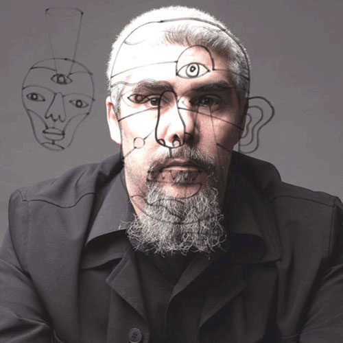

DR.ALDERETE
Nacido en la lejana Patagonia argentina en 1971, a los 18 años Jorge Alderete viajó a La Plata, en la provincia de Buenos Aires, para estudiar Diseño en Comunicación Visual en la Facultad de Bellas Artes de la Universidad Nacional de La Plata.